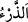

taşıdık. Eğer böyle olmasaydı yeryüzünde insanoğlunun nesli ve zürriyeti kalmazdı. Biz
onlar için sûret ve şekil olarak bu gemiye benzeyen başka nice gemi, kayık, sandal ve
tekneler yarattık.
Eğer “Buna göre onların kendileri de zürriyyetleriyle beraber gemide taşındıkları
halde Allah Teâlâ niçin ‘Onları ve zürriyyetlerini taşıdık’ buyurmadı?” diye sorarsan,
şöyle cevap veririm: Boğulmaktan kurtarma nimetinin onlara ve kıyâmete kadar gelecek
çocuklarına şâmil olduğuna işâret olmak üzere böyle buyurulmuştur. Eğer ‘Biz onları
taşıdık’ buyrulsaydı, sadece onları boğulmaktan kurtarma nimeti zikredilmiş olurdu.
Gemiler kullar tarafından yapılan şeylerden olduğu halde burada Allah Teâlâ
tarafından yaratılmış oldukları ifade edilmiştir. Bu, gemilerin Allah’ın güç vermesi ve
ilham etmesi sayesinde onlar tarafından yapıldığı için değil, Allah Teâlâ’nın
“Gözlerimizin önünde ve vahyimiz (emrimiz) uyarınca gemiyi yap.” (Hud 11/37)
kavlinin ifade ettiği gibi bu işin aslı Allah Teâlâ’nın kudret ve hikmetine ziyadesiyle
mahsus olduğu içindir.
Onların bu gemilere girmelerinden ‘binmek’ diye söz edilmesi, onların kendi irâdeleri
ve tercihleriyle olduğu içindir. Nitekim onların zürriyyetlerinin Nuh’un gemisine
girmesinden ‘taşımak’ diye söz edilmesi ise kendi şuur ve tercihleri ile olmadığı içindir.
Mü’minûn sûresindeki (23/22) “Onların üzerinde ve gemilerde taşınırsınız.” âyeti ise
tağlîb[143] yoluyladır.
Bazıları burada ikinci mânâyı daha belirgin kabul etmişlerdir. Çünkü burada geminin
benzerinden deve murad edilirse bu durumda “Onlar için, bunun gibi binecekleri
başka şeyler de yarattık.” sözü mânâ bakımından birbirine bitişik durumda olan iki
hüküm arasını ayırmış olur. Çünkü “Dilesek onları suda boğarız.” sözü “gemi”
kelimesine bitişiktir. el-İrşâd’da bunun için şöyle bir mazeret ileri sürülmüştür: Bu
âyetin içinde devenin yaratılmasından bahsedilmesi, deve ile gemi arasında tam
benzerlik olduğu için istitrad/ara söz olaraktır. Öyleki deve de sanki bir tür gemidir.
Burada “zürriyet” ile babaların ve dedelerin murâd edildiği de söylenmiştir. Çünkü
“zürriyet” kelimesi usûle (babalar ve dedeler) ve furû’a (çocuklar ve torunlar) söylenir.
Zira zürriyet, yaratmak mânâsında olan “ kökündendir. Buna göre bu kelime hem
asla, hem de nesle isim olarak uygundur. Çünkü onların bir kısmı bir kısmından
yaratılmıştır. Babalar zürriyyettir. Çünkü oğullar onlardan yaratılmıştır. Zikredildiği
gibi zürriyet lügatte ancak çocuklara ve kadınlara söylenir. Ancak insanların atası Âdem
(a.s.)’ın zürriyyetinin murâd edilmesi bu kuralın dışındadır. Çünkü onlar kıyametin
kopmasına kadar usûl ve furû’durlar. Doğru ilim Allah Teâlâ’nın katındadır.
Denilmiştir ki üç şeyi Hak Teâlâ, kendi kudretinin kemaliyle yürütmüştür: Develeri
sahrada, bulutu havada ve gemiyi denizde. Zürriyyetlerin gemilere yüklenip
taşınmasının bir nimet olarak zikredilmesinden deniz vasıtalarına binmenin câiz olduğu
anlaşılır. Ancak güneşin akrep burcuna girmesinden kış sonuna kadar deniz vâsıtalarına
binmek câiz değildir. Çünkü bu, kişinin kendisini tehlikeye atması demektir. Nitekim